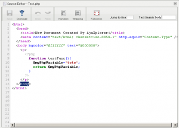

Implementation of the very nice CodeMirror editor, from CodeMirror.net. Will probably replace CodePress in the next distribution, as the latter one seem to be no more supported, and CodeMirror seems to have clearly better overall performances. It could also replace the ultra-standard editor.text, as it adds line numbering and text wrapping even for standard text.
Supported files are : xml, html, htm, js, json, css, php, phtml, sparql, txt, py, c#, java, jsp, sql. The php/html are particularly good, because of the parallel support of PHP, HTML, CSS and Javascript syntax highlighting in a same file!
With this editor, it's possible to toggle on the fly the line-numbers and the text-wrapping. Plus a nice Undo/Redo feature, a "Jump to line" and a textual search.
